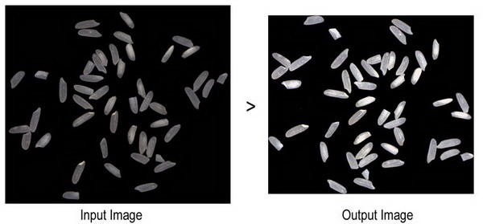
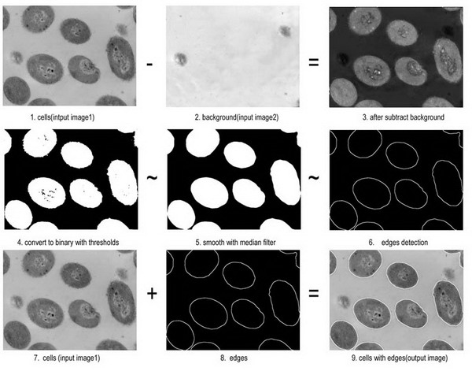
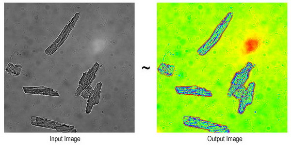

Origin 8は、以前のバージョンに比べ、画像処理の機能が拡張されています。 基本的な画像処理に必要な操作を実行するサンプルとLabTalkスクリプトとして以下に示します。
画像処理を行うのに利用可能なすべてのXファンクションを表示するには、次のコマンドを使います。
lx cat:="image*";
いくつかのXファンクションはOriginProでのみ利用できます。
この例では、画像を回転し、余白を切り取り、自動レベルを適用して、より小さく、明確にします。

//プロジェクトエクスプローラに新しいフォルダを作成 pe_mkdir RotateTrim path:=aa$; pe_cd aa$; //行列を作成し、そこに画像をインポート window -t m; string fpath$ = "samples\Image Processing and Analysis\rice.bmp"; string fname$ = System.path.program$ + fpath$; impimage; window -r %h Original; //元の画像の寸法を取得 matrix -pg DIM nCol1 nRow1; window -d; //画像の複製 window -r %h Modified; imgRotate angle:=42; imgTrim t:=17; matrix -pg DIM nCol2 nRow2; //修正した画像の寸法を取得 imgAutoLevel;// 画像に自動レベルを適用 window -s T; //ウィンドウを水平に並べて表示 //レポート window -n n Report; old = type.redirection; type.redirection = 2; type.notes$=Report; type "Dimension of the original image: "; type " $(nCol1) * $(nRow1)\r\n"; // "754 * 668" type "Dimension of the modified image:"; // "688 * 601" type " $(nCol2) * $(nRow2)\r\n"; type.redirection = old;
また、新しい画像ウィンドウで画像の回転、サイズ変更、カラースケールの調整もできます。
必要なOriginのバージョン： 2016 SR0
fname$ = SYSTEM.PATH.PROGRAM$ + "Samples\Image Processing and Analysis\Rice.bmp"; cvopen fname:=fname$; //新規ウィンドウにイメージを開く; cvRotate angle:=-42 interp:=0 resize:=0 trim:=1; //画像の回転とサイズ変更 cvGray img:=<active>; cvHistEq img:=<active>; //ヒストグラムを均等化
細胞の画像から背景を除去し、エッジを検出します。

//プロジェクトエクスプローラに新しいフォルダを作成 pe_mkdir EdgeDetection path:=aa$; pe_cd aa$; //行列を作成し、そこに細胞の画像をインポート window -t m; string fpath$ = "samples\Image Processing and Analysis\cell.jpg"; string fname$ = System.path.program$ + fpath$; impimage; cell$ = %h; //行列を作成し、そこに背景の画像をインポート window -t m; string fpath$ = "samples\Image Processing and Analysis\bgnd.jpg"; string fname$ = System.path.program$ + fpath$; impimage; cellbk$ = %h; //背景を除去し、前処理を行う //x, y はImage2のオフセット imgSimpleMath img1:=cellbk$ img2:=cell$ func:=sub12 x:=7 y:=13 crop:=1; //最低および最高の明度をバイナリ0または1に指定する imgBinary t1:=65 t2:=255; // メディアンフィルタの次数は18 imgMedian d:=18; //エッジ検出 // エッジピクセルを決定するのに使用するしきい値12を指定 //そして shv(Sobel 水平&垂直) エッジ検出フィルタを適用 imgEdge t:=12 f:=shv; edge$ = %h; //エッジを細胞の画像に追加して戻す imgSimpleMath img1:=edge$ img2:=cell$ func:=add; window -z;
この例では、グレー画像をレインボーカラーに変換する方法を示します。

pe_mkdir Conversion path:=aa$; pe_cd aa$; //行列を作成し、サンプル画像をインポート window -t m; path$ = System.path.program$; fname$ = path$ + "samples\Image Processing and Analysis\myocyte8.tif"; impimage; window -r %h Original; window -d; //画像の複製 window -r %h newimage; imgC2gray; //グレーに変換 //パレットを適用 fname$ = System.path.program$ + "palettes\Rainbow.PAL"; imgpalette palfile:=fname$; window -s T; //パレットを適用
新しい画像ウィンドウでグレースケール画像にパレットを追加します。
必要なOriginのバージョン：2016 SR0
fname$ = SYSTEM.PATH.PROGRAM$ + "Samples\Image Processing and Analysis\cell.jpg"; cvopen fname:=fname$; //新しいウィンドウに画像を開く; cvGray img:=<active>; cvPalette img:=<active> fname:="C:\Program Files\OriginLab\Origin2016\Palettes\Lite Cyan.pal";
画像を行列オブジェクトに変換するとき、Imageデータ型として維持され、ウィンドウの右上にアイコン I で示されます。2D FFT のようなある数学操作を行うには、データ型をData 型に変換する必要があり、そうすると、ウィンドウの右上のアイコンはD で示されます。
このスクリプト例では、複数の画像を行列ブックにインポートし、それらをdata型に変換することを示します。
//ワイルドカードを使ってファイルを検索 string path$=system.path.program$+"Samples\Image Processing and Analysis"; findFiles ext:="*tif*"; // 新しい行列ブックを作成し、すべての画像を新しいシートとしてインポート newbook mat:=1; impImage options.FirstMode:=0 options.Mode:=4; //すべてのシートをループし、画像をバイトデータに変換 doc -e LW { img2m om:=<input> type:=1; }